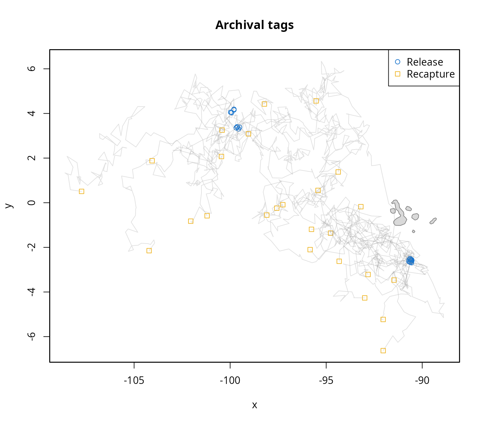
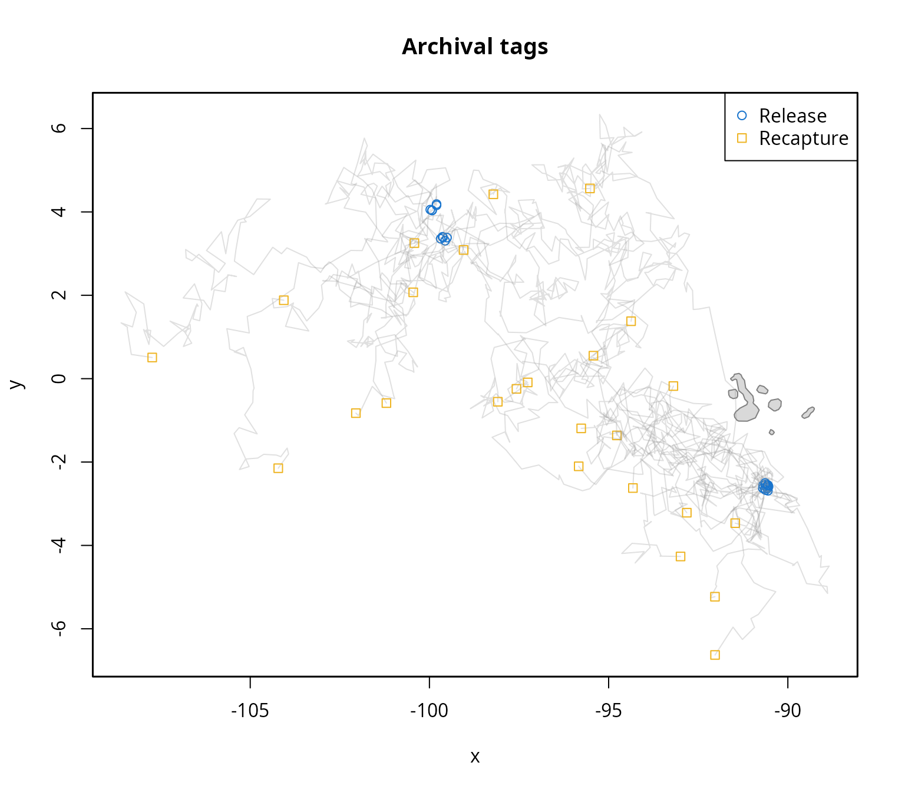
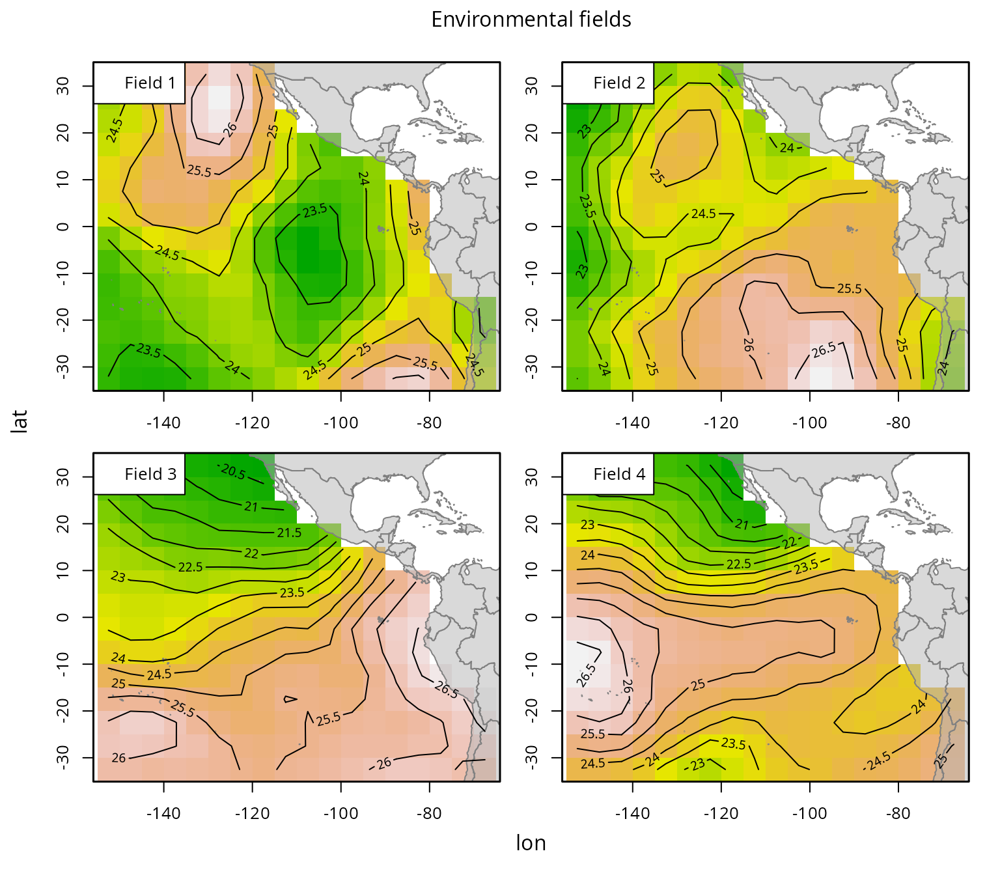

This tutorial illustrates the application of the momo package to model fine-scale movement based on tagging data.
Outline:
- Prepare the data
- Fit the model
- Results
- Advanced settings
- Summary
- References
The package is loaded into the R environment with:
This introductory tutorial uses a simulated data set included in the
package: “skjepo”. We load it into the R environment with the command
data(skjepo).
This command loads not only the main list object skjepo
(of class momo.sim), which contains all required simulated
data and can be used right away to fit the model, but also four
individual data sets: skjepo.grid, skjepo.env,
skjepo.ctags, and skjepo.atags. These data
sets illustrate the typical structure of raw input data and demonstrate
how the functions in the momo package can be used to convert
them into the format required by the model as demonstrated in the next
section.
Prepare the data
The package provides two main data sets: one with information on
releases and recoveries of conventional tags, and another with track
data from archival tags. These data sets can be prepared for analysis
using the built-in functions prep.ctags and
prep.atags. Both functions allow users to specify which
columns contain the release and recapture times and locations, and
automatically convert date fields to the required format. Additional
features, such as a speed filter to flag implausible movements, are also
available. For full details on how to use each function, refer to their
respective help pages (e.g., help("prep.ctags")).
#> Removing 5 recaptured tags for which release time is after recapture time (t0 > t1). 

Based on the spatial extent of the tagging data, the next step is to
define a spatial grid. While the Kalman filter approach does not require
a grid for model fitting (Mildenberger, Maunder,
and Nielsen in prep), using a grid enables spatial prediction,
visualization, and analysis of estimated habitat preferences and
movement rates. The create.grid function offers flexible
functionality to define custom grids and to manually include or exclude
specific grid cells as needed.
Since manual selection of grid cells is not feasible in this automated vignette, we use the grid provided in the skjepo data set, but modify it to create a coarser resolution:

Another important component of momo is the environmental
data, which characterizes the habitat preferences of the modeled
species. The prep.env function formats this data into the
structure required by the model:

To speed up the fitting process in this vignette, we use a subset of the available conventional tag data:
The individual data sets can then be combined into a single input
object using the setup.momo.data function.
The def.conf function generates a list of default
configuration settings, including flags that control which model
functionalities are activated and how environmental fields are aligned
with the model’s time steps. It is good practice to review this
configuration list to ensure that the default settings align with the
goals and structure of your analysis.
Similarly, the def.par function generates a list of
default model parameters and their initial values. While users can
adjust the initial values as needed, caution is required when modifying
parameter dimensions. These dimensions must be consistent with the input
data (e.g., the number of environmental fields) and the configuration
settings (e.g., whether passive advection, taxis, or both are used).
With all necessary input data prepared, the model is now ready to be fitted using momo.
Fit the model
The model is fitted using the fit.momo function.
Depending on the model’s complexity and the number of tags, this step
may take several minutes. To reduce computation time, we disable the
calculation of uncertainty estimates by setting
do.sdreport = FALSE.
#> Building the model, that can take a few minutes.
#> Model built (0.38min). Minimizing neg. loglik.
#> 0: 1595143.9: 0.00000 0.00000 -4.60517 -4.60517
#> 1: 635104.70: -0.00109162 0.00103431 -3.80611 -4.00393
#> 2: 304398.49: -0.00321421 0.00304836 -3.65852 -3.01488
#> 3: 170499.70: -0.0452335 0.0429272 -3.57747 -2.01986
#> 4: 69216.328: -0.0488214 0.0463318 -2.68219 -1.57439
#> 5: 39735.044: -0.0693510 0.0658124 -1.74462 -1.92105
#> 6: 16219.655: -0.0717639 0.0681009 -0.957443 -1.30433
#> 7: 8947.6279: -0.0944541 0.0896236 0.0237874 -1.49461
#> 8: 5023.3234: -0.0783233 0.0743135 0.700975 -0.759138
#> 9: 3583.2798: -0.0822662 0.0780472 1.69448 -0.872793
#> 10: 3081.8592: -0.0855251 0.0811369 2.56455 -1.36571
#> 11: 3051.9565: -0.293328 0.277865 2.56205 -2.32389
#> 12: 3044.8443: -0.848239 0.802450 3.03697 -2.76131
#> 13: 3012.0243: -1.17703 1.11384 2.85028 -2.66093
#> 14: 3010.1656: -1.53914 1.45674 2.81434 -2.66349
#> 15: 3007.8178: -2.82995 2.67935 2.79499 -2.69077
#> 16: 2999.9149: -7.99253 7.57087 2.75921 -2.80270
#> 17: 2976.7818: -27.8526 26.3966 2.68642 -3.23978
#> 18: 2946.0280: -60.1889 57.0742 2.64521 -4.00469
#> 19: 2913.7132: -112.051 106.308 2.65744 -5.32466
#> 20: 2905.8012: -121.241 115.077 2.71608 -5.61794
#> 21: 2904.0295: -121.952 115.825 2.76101 -5.68303
#> 22: 2904.0208: -121.797 115.724 2.76409 -5.68283
#> 23: 2904.0198: -121.738 115.717 2.76436 -5.68219
#> 24: 2904.0081: -121.094 115.835 2.76634 -5.67661
#> 25: 2903.9865: -119.987 116.381 2.76854 -5.66987
#> 26: 2903.9253: -117.072 118.439 2.77231 -5.65739
#> 27: 2903.7655: -109.572 124.805 2.77852 -5.63446
#> 28: 2903.3677: -91.0385 142.337 2.78805 -5.59320
#> 29: 2902.3888: -45.8686 187.979 2.80182 -5.51761
#> 30: 2900.0575: 62.0671 301.698 2.81974 -5.37694
#> 31: 2895.2515: 289.507 548.648 2.83529 -5.14487
#> 32: 2887.5615: 663.247 966.839 2.83249 -4.88191
#> 33: 2878.3964: 1104.80 1483.86 2.80062 -4.81514
#> 34: 2872.4940: 1473.44 1944.38 2.75515 -5.08352
#> 35: 2872.1677: 1494.81 1981.95 2.74499 -5.22060
#> 36: 2872.1532: 1471.98 1955.95 2.74421 -5.23014
#> 37: 2872.1500: 1459.32 1940.98 2.74322 -5.22813
#> 38: 2872.1499: 1459.06 1940.54 2.74299 -5.22607
#> 39: 2872.1499: 1459.31 1940.78 2.74295 -5.22539
#> 40: 2872.1499: 1459.42 1940.90 2.74293 -5.22495
#> 41: 2872.1499: 1459.82 1941.31 2.74288 -5.22279
#> 42: 2872.1499: 1460.33 1941.85 2.74281 -5.21823
#> 43: 2872.1497: 1461.28 1942.84 2.74268 -5.20521
#> 44: 2872.1493: 1462.90 1944.53 2.74246 -5.17064
#> 45: 2872.1479: 1466.36 1948.12 2.74196 -5.06348
#> 46: 2872.1368: 1478.68 1960.88 2.74012 -4.59055
#> 47: 2870.9765: 1528.04 2011.87 2.73283 -2.65781
#> 48: 2870.8166: 1530.01 2013.91 2.72877 -2.58037
#> 49: 2870.4629: 1530.01 2013.91 2.70643 -2.58006
#> 50: 2869.8001: 1530.01 2013.92 2.68294 -2.22345
#> 51: 2869.6850: 1529.76 2013.66 2.67056 -2.22491
#> 52: 2869.6831: 1529.51 2013.40 2.66937 -2.22428
#> 53: 2869.5788: 1483.80 1966.14 2.67656 -2.26811
#> 54: 2869.5028: 1460.08 1939.75 2.66629 -2.19116
#> 55: 2869.4992: 1445.76 1923.06 2.66391 -2.18644
#> 56: 2869.4992: 1446.64 1924.07 2.66420 -2.18598
#> 57: 2869.4992: 1446.77 1924.23 2.66424 -2.18641
#> 58: 2869.4992: 1446.74 1924.19 2.66423 -2.18633
#> Minimization done (0.019min). Model converged. Estimating uncertainty.In addition to the input data lists, the returned object also
includes the obj (from RTMB) and opt (from the
minimizer). Both contain the estimated parameter values and other
details relevant to the model fitting.
#> alpha alpha beta logSdObsATS
#> 1446.738562 1924.188935 2.664225 -2.186326Results
momo provides several functions for visualizing model
results. In this example, since the data are simulated and the true
parameters are known, we can use the plotmomo.compare
function to visualize both the estimated and true habitat preferences
and movement patterns.

Advanced settings
There are several advanced settings in momo that will be covered in future vignettes. However, this vignette highlights three important ones: (i) grouping tags into release events to speed up model fitting, (ii) using the matrix exponential approach as an alternative to the Kalman filter, and (iii) mapping parameters to fix or exclude them during estimation.
It is common for multiple tags to be released at the same location
and time. Grouping these tags into release events can significantly
speed up the movement modeling, as the analysis is performed per event
rather than per individual tag. The potential loss in accuracy is likely
minimal and can be evaluated through sensitivity analyses, while the
grouped approach is recommended for the baseline scenario due to its
efficiency. The get.release.event function enables this
grouping by assigning tags to release events based on a specified
spatial grid and time vector. These events can then be added to the data
list for modeling. Note that this is step is optional.
By default, momo uses the Kalman filter approach as
described in Mildenberger, Maunder, and Nielsen
(in prep). However, it also supports an alternative method based
on the matrix exponential. You can easily switch between the two by
setting the use.expm flag in the configuration list. To use
the matrix exponential approach, simply set
use.expm = TRUE.
Lastly, it may be useful to map parameters, for example, to estimate
a single value for both directions of passive advection. A list of
default mapping settings can be generated using the def.map
function. The resulting map can then be passed to fit.momo
to control which parameters are estimated, fixed, or shared.
Summary
This vignette introduced the main features and workflow of the
momo package for estimating animal movement and habitat
preferences from tagging data. Using a simulated data set
(skjepo), we demonstrated how to prepare the required
inputs, configure and fit the model, and visualize the results.
We covered the preparation of conventional and archival tag data
(prep.ctags, prep.atags), environmental fields
(prep.env), and spatial grids (create.grid).
These were then combined using setup.momo.data into a
format suitable for model fitting. Configuration and parameter
initialization were handled through def.conf and
def.par, with model fitting performed using
fit.momo. The plotmomo.compare function
allowed us to visualize and compare estimated versus true movement and
habitat preference patterns.
Several advanced options were introduced, including grouping tags
into release events (get.release.event), switching between
the Kalman filter and matrix exponential approaches
(use.expm flag), and mapping parameters
(def.map) to simplify or constrain estimation.
This basic example provides a foundation for applying momo
to real tagging data. More details about the methodology are described
in Mildenberger, Maunder, and Nielsen (in
prep). Further details about functions and their arguments can be
found in the help files of the functions (help() or
?, where the dots refer to any function of the package).
Additional vignettes will explore uncertainty estimation, model
diagnostics, and sensitivity analyses to support more robust ecological
inference and management applications.